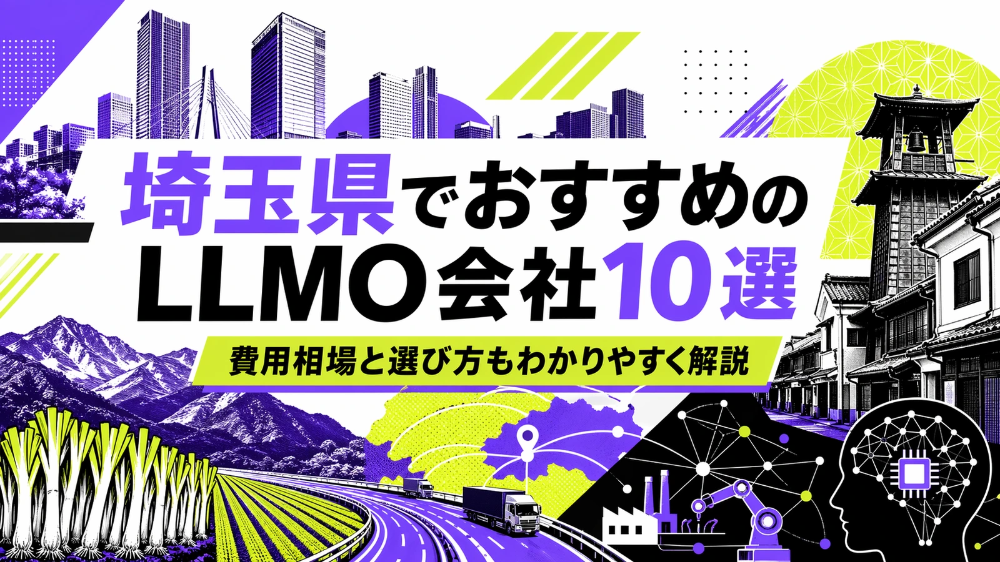
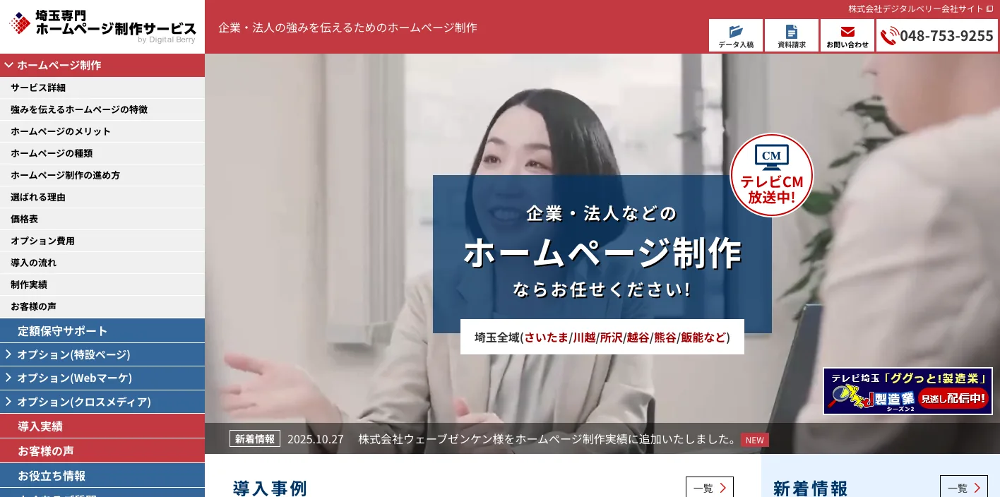
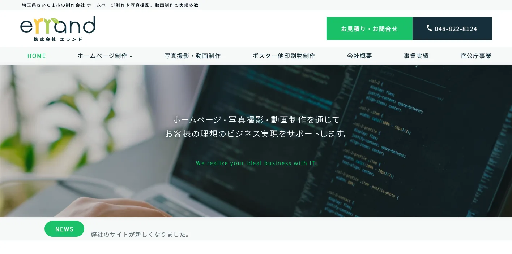
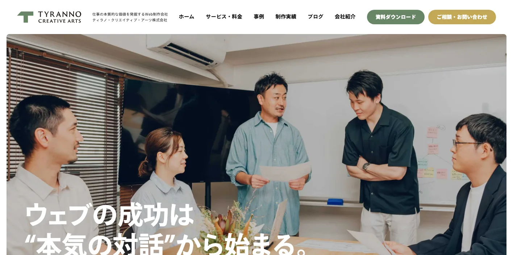
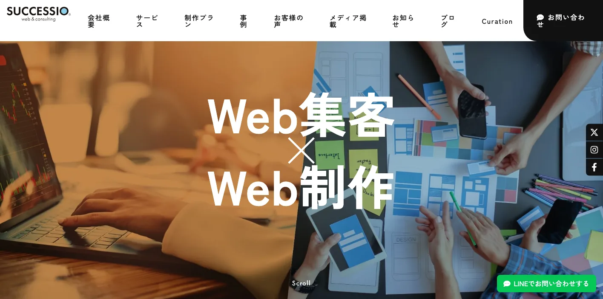
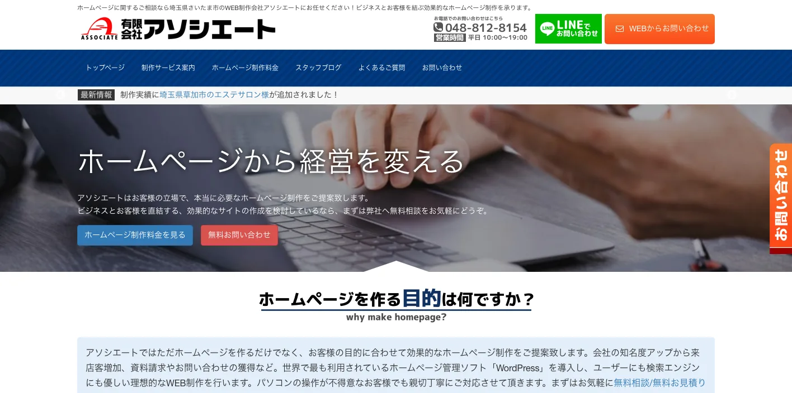
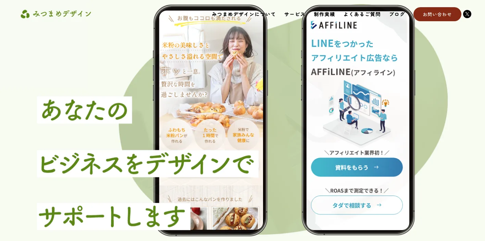
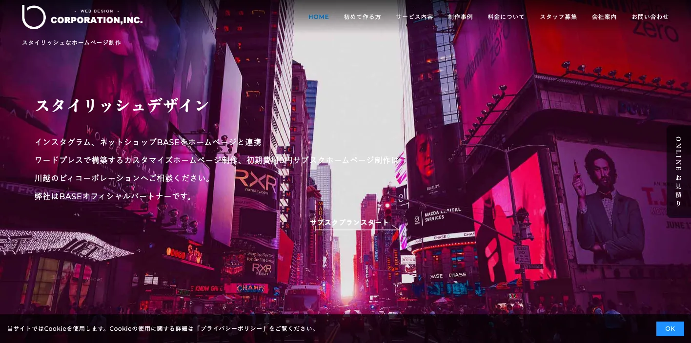
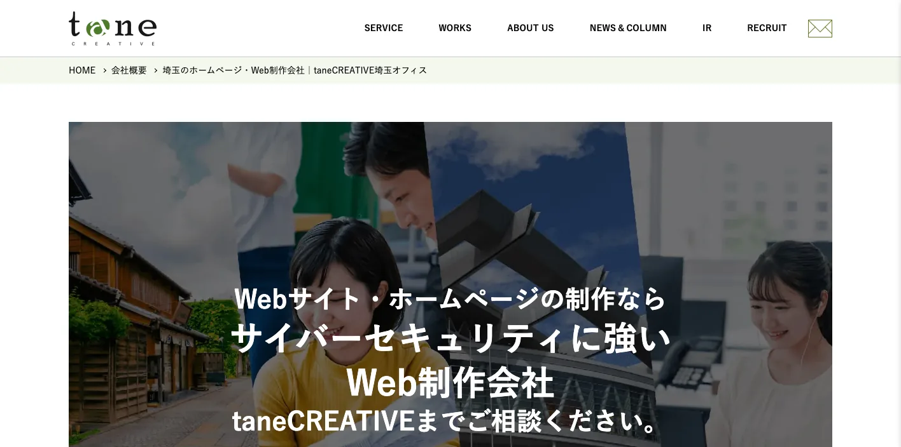
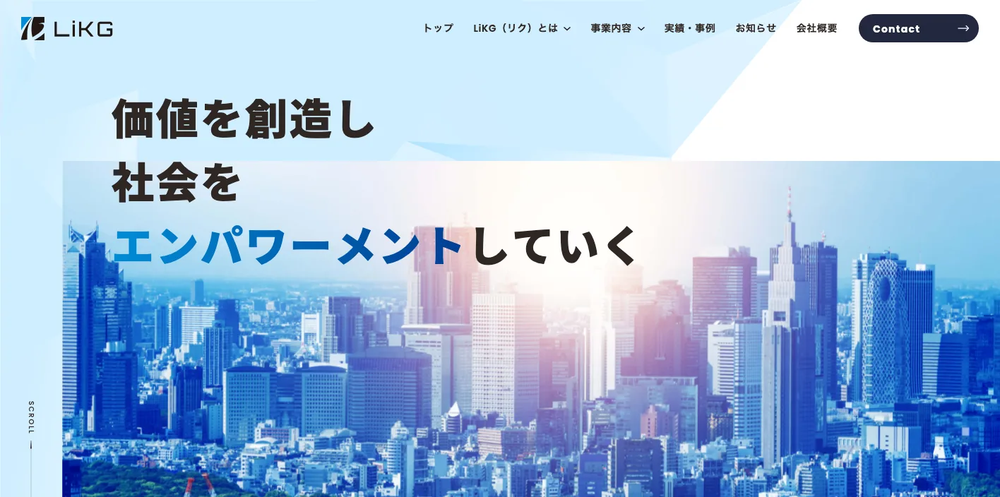

埼玉県でおすすめのLLMO会社10選｜費用相場と選び方もわかりやすく解説

埼玉県でLLMO会社を選ぶときは、単に「さいたま市のWeb制作会社」「埼玉県のSEO会社」だけで探すと、必要な支援がずれやすいです。さいたま市の行政・生活サービス、川口・戸田・和光の東京近接商圏、川越の観光、熊谷の県北拠点、所沢の西部商圏、越谷・春日部の東部商圏、秩父・長瀞の観光では、AI検索で聞かれる質問の形が違うからです。
埼玉県推計人口では、2026年3月1日現在の人口は7,314,641人、世帯数は3,370,829世帯です。令和6年の観光統計では、観光地点別の入込客数は約1億2,178万人、行祭事・イベントは約2,624万人でした。県の「グラフで見る彩の国さいたま」では、製造品出荷額等の大きさや首都圏に近い立地も確認できます。
つまり埼玉県のLLMOでは、地域名を入れた記事を増やすだけでは足りません。地域店舗、医療福祉、住宅、士業、物流、製造、観光、採用、BtoB商談まで、ユーザーとAIが判断に使う一次情報を整理することが重要です。基本から確認したい方はLLMO対策の基礎記事、近隣県も見たい方は東京都の比較記事や神奈川県の比較記事も参考になります。自社サイトの現状を先に見たい場合は無料LLMO診断から始めると判断しやすいです。
目次

埼玉県でおすすめのLLMO会社10選
今回は、埼玉県内に拠点があり、Web制作、SEO、Webマーケティング、広告、写真・動画、EC、採用サイト、運用改善などの公開情報を確認しやすい会社を中心に、LLMOを明示している全国対応会社も補完的に加えました。埼玉県内でLLMO専業を前面に出す会社はまだ多くありません。そのため、AI検索対策そのものだけでなく、サイト構造、FAQ、地域ページ、事例、写真、採用、更新体制まで支援できる会社を比較対象にしています。
埼玉県では、さいたま市の都市型サービス、川口・戸田・和光の東京近接商圏、川越・秩父の観光、熊谷・深谷の県北商圏、三郷・八潮・越谷の物流、製造・医療福祉・住宅まで、必要な情報が変わります。まずは表で向いている企業を確認し、その後に各社の特徴を見てください。
| 会社名 | 拠点性 | 向いている企業 | 支援の軸 |
|---|---|---|---|
| 株式会社デジタルベリー | さいたま市中央区 | 法人サイト、採用、製造業、学校・病院サイトを強めたい企業 | ホームページ制作・SEO・採用・動画・デジタルカタログ |
| 株式会社エランド | さいたま市浦和区 | 写真・動画・EC・Web制作を一体で進めたい企業 | ホームページ制作・撮影・動画・EC・運用 |
| TYRANNO CREATIVE ARTS株式会社 | さいたま市 | デザイン、ブランディング、Webマーケを重視する企業 | Web制作・デザイン・マーケティング・ブランディング |
| 合同会社サクセシオ | 埼玉県内対応 | 標準SEO込みで成果重視のサイトを作りたい中小企業 | ホームページ制作・SEO・Web集客・運用 |
| 有限会社アソシエート | さいたま市岩槻区 | 地域密着でSEOとWordPressを相談したい企業 | ホームページ制作・SEO・WordPress・リニューアル |
| みつまめデザイン | 埼玉県内対応 | 小規模事業者や店舗で丁寧なデザインを求める事業者 | ホームページ制作・デザイン・ロゴ・印刷物 |
| 株式会社ビィコーポレーション | 川越市 | 川越周辺でSEO内部施策とサブスク運用を相談したい企業 | ホームページ制作・SEO・サブスク運用・BASE連携 |
| taneCREATIVE株式会社 埼玉オフィス | さいたま市大宮区 | CMS、セキュリティ、運用保守まで重視する企業 | Web制作・CMS・保守・アクセシビリティ |
| 株式会社LiKG | 全国対応 | LLMO診断から記事制作まで任せたい企業 | LLMO診断・LLMO×SEO伴走・記事制作 |
| 株式会社ジオコード | 全国対応 | SEOとAI最適化を実装込みで進めたい企業 | SEO・コンテンツ・AIO/LLMO・実装改善 |
株式会社AIMAは埼玉本社の会社ではありませんが、全国対応でLLMO支援を提供しています。月額5万円のLLMO支援は初期費用なし・1ヶ月単位で始められ、質問設計、記事制作、引用チェックに絞って実務を進められます。さいたま、川口、川越、熊谷、所沢、越谷、戸田・和光、秩父のように検索文脈が分かれる場合も、まず無料LLMO診断で優先順位を確認できます。
1. 株式会社デジタルベリー

株式会社デジタルベリーは、さいたま市中央区新都心に拠点を置くWeb制作会社です。公式サイトでは、埼玉で350社以上のホームページ制作実績、SEO対策、システム開発、バーチャル展示会、採用サイト・ページ、動画制作、デジタルカタログなどを案内しています。企業、学校、病院、団体など法人向けの支援範囲が広い会社です。
LLMOでは、法人概要、サービス、採用、製品、FAQ、実績をAIが読みやすい形に整える必要があります。デジタルベリーは、さいたま新都心周辺の法人や、製造業・学校・医療機関が、Webと営業資料をまとめて整えたい場合に向いています。
2. 株式会社エランド

株式会社エランドは、さいたま市浦和区の制作会社です。公式サイトでは、ホームページ制作、写真撮影、動画制作、システム開発、ネットショップ制作、商品ページ制作、登録代行などを案内しています。ホームページ制作ページでは、WEBだけで500社以上の受注実績、創業52年、動画撮影や商品撮影への対応も確認できます。
埼玉県では、地域店舗、食品、製造、医療福祉、EC、採用のように、写真や動画が判断材料になる案件が多いです。エランドは、文章だけでなく撮影、動画、EC、更新運用までまとめて相談したい企業に向いています。
3. TYRANNO CREATIVE ARTS株式会社

TYRANNO CREATIVE ARTS株式会社は、さいたま市を拠点にWebサイト制作、デザイン、ブランディング、Webマーケティングを支援する会社です。公式サイトでは、Web制作、ブランド構築、デザイン、マーケティングの領域を横断して相談できることを確認できます。
LLMOでは、見た目だけではなく、ブランドの言語化、サービスの違い、選ばれる理由、導入事例、FAQを整理する必要があります。TYRANNO CREATIVE ARTSは、埼玉県内でデザイン性と情報設計を両立したい企業に比較しやすい会社です。
参考：TYRANNO CREATIVE ARTS株式会社｜トップページ
4. 合同会社サクセシオ

合同会社サクセシオは、埼玉県のWeb集客・ホームページ制作代行会社です。公式サイトでは、ホームページ制作、標準SEO対策、事業の強みや他社との差別化を打ち出す制作方針、成果にこだわるホームページ作りを案内しています。
中小企業のLLMOでは、会社の強みが抽象的なままだとAIにもユーザーにも伝わりません。サクセシオは、地域事業者が、自社の強み、対応エリア、サービスの違い、料金、FAQを整理しながらWeb集客を始めたい場合に向いています。
参考：合同会社サクセシオ｜埼玉県 Web集客＆ホームページ制作代行
5. 有限会社アソシエート

有限会社アソシエートは、さいたま市岩槻区のWeb制作会社です。公式サイトでは、埼玉県さいたま市のホームページ制作、SEO対策ノウハウ、WordPressへの移植・リニューアル、企業サイト制作などを案内しています。地域密着で相談しやすい制作会社です。
既存サイトが古い、CMSが使いにくい、地域名検索で弱い場合、まずサイト構造と更新方法を整える必要があります。アソシエートは、さいたま市・岩槻・春日部周辺の企業が、SEOとWordPressを軸に改善したい場合に向いています。
参考：アソシエートWEB｜埼玉県さいたま市のホームページ制作会社
6. みつまめデザイン

みつまめデザインは、埼玉県内対応のデザイン・ホームページ制作サービスです。公式サイトでは、ホームページ制作、デザイン、ロゴ、印刷物など、事業に必要な見た目と言葉を整える支援を確認できます。小規模事業者や店舗が相談しやすい制作パートナーです。
LLMOでは、専門的な施策だけでなく、まず事業内容、写真、料金、予約方法、アクセス、よくある質問を分かりやすく整えることが重要です。みつまめデザインは、個人店、教室、サロン、地域サービスが、無理なくWeb発信を始めたい場合に比較しやすい会社です。
7. 株式会社ビィコーポレーション

株式会社ビィコーポレーションは、川越市を拠点とするホームページ制作会社です。公式サイトでは、川越・川越隣接エリア限定の制作費無料サブスクプラン、WordPress、インスタグラム連携、Q&A投稿、SEO内部施策、BASEオフィシャルパートナーであることなどを案内しています。
川越周辺では、観光、飲食、物販、教室、美容、士業、地域店舗の情報が検索されやすいです。ビィコーポレーションは、川越エリアで小さく始め、更新・Q&A・SNS連携まで運用したい企業に向いています。
参考：株式会社ビィコーポレーション｜川越のホームページ制作会社
8. taneCREATIVE株式会社 埼玉オフィス

taneCREATIVE株式会社は、さいたま市大宮区に埼玉オフィスを置くWeb制作会社です。公式サイトでは、CMS、Web制作、運用保守、セキュリティ、アクセシビリティ、自治体・公共性の高い案件にも関わる制作体制を確認できます。
医療、教育、自治体関連、公共性の高い団体では、見た目だけでなく、情報の正確性、更新性、アクセシビリティ、セキュリティが重要です。taneCREATIVEは、埼玉県内でCMSや運用保守まできちんと整えたい組織に向いています。
9. 株式会社LiKG

株式会社LiKGは、LLMOコンサルティングを明確に打ち出している全国対応会社です。公式ページでは、LLMO診断、LLMO×SEOコンサルティング、EEAT強化記事制作を案内し、AI OverviewやChatGPTでの露出状況調査、20項目診断、改善レポート、構造化データ改善指示、記事構成作成などを説明しています。
埼玉県の企業でも、すでにサイトや記事があり、AI検索にどう出ているかを診断したい場合に向いています。医療福祉、住宅、物流、製造、観光、採用、BtoBの一次情報を持っているのにAI検索で拾われていない会社は、診断から始める価値があります。
10. 株式会社ジオコード

株式会社ジオコードは、SEO対策、コンテンツマーケティング、Web制作、Web広告、AIO・LLMOなどAI最適化まで案内している全国対応会社です。公式サイトでは、SEO・コンテンツ・オウンドメディアからAIO・LLMOなどAI最適化まで支援するサービス構成を確認できます。
埼玉県内でも、県外商圏を持つBtoB企業、EC企業、採用を強める企業では、地場制作会社だけでなく全国のSEO会社も比較対象になります。ジオコードは、SEOとLLMOを分けず、分析から実装まで任せたい企業に向いています。
埼玉県のLLMO会社を比較する際のポイント
埼玉県でLLMO会社を比較するときは、会社名の知名度よりも、埼玉県の地域構造と産業の違いをページ設計に落とし込めるかを見てください。ここでは、会社一覧とは役割を分け、埼玉県ならではの比較軸だけを整理します。
さいたま・川口・川越・熊谷・所沢で検索意図を分けられるか
埼玉県は人口が700万人を超える大きな県です。2026年3月1日現在、さいたま市は1,356,488人、川口市は595,270人、川越市は353,980人、所沢市は340,620人、越谷市は337,696人、熊谷市は188,241人です。都市ごとに、生活サービス、医療福祉、住宅、教育、観光、製造、物流の検索意図が変わります。
LLMO会社には、「埼玉県」で一括りにせず、さいたま市の都市型商圏、川口・戸田・和光の東京近接、川越の観光、熊谷・深谷の県北、所沢・入間の西部、越谷・春日部の東部まで分けて設計できるかを確認しましょう。
東京近接の生活商圏と、県内完結の商圏を分けられるか
川口、戸田、和光、朝霞、新座、草加、八潮、三郷は、東京に近い生活商圏です。一方で、熊谷、深谷、本庄、秩父、飯能、東松山、久喜、加須などは、県内や周辺県との移動が重要になります。同じ「埼玉県対応」でも、ユーザーが比較する距離感は違います。
医療、士業、住宅、リフォーム、教育、美容、介護では、駅名、駐車場、通院・通学・出張範囲、対応エリア、予約のしやすさがAI検索で問われます。会社選びでは、地名ページを量産するだけでなく、実際の来店・訪問・配送導線を説明できるかを見てください。
川越・秩父・長瀞・鉄道博物館など観光質問を具体化できるか
令和6年の埼玉県観光統計では、観光地点別の入込客数は約1億2,178万人、行祭事・イベントは約2,624万人です。川越の蔵造り、秩父・長瀞、鉄道博物館、さいたまスーパーアリーナ、羊山公園、三峯神社など、目的地ごとに質問が変わります。
AI検索では「川越は半日で回れるか」「秩父で車なしでも行ける場所」「長瀞ライン下りの予約」「子連れで鉄道博物館に行く注意点」のように聞かれます。観光・宿泊・飲食の企業は、季節、アクセス、駐車場、予約、雨天、周辺施設、FAQをセットで整理できる会社を選びましょう。
物流・製造・BtoBでは圏央道、外環道、関越道の導線を説明できるか
埼玉県は首都圏に近く、圏央道、外環道、関越道、東北道、常磐道方面への接続が強い地域です。三郷、八潮、戸田、川口、久喜、加須、羽生、熊谷、深谷などでは、物流、倉庫、製造、卸、BtoBサービスの情報設計が重要になります。
BtoB企業のLLMOでは、会社概要だけでは足りません。設備、対応範囲、納入業界、品質管理、配送条件、倉庫面積、対応時間、採用情報まで、問い合わせ前に知りたい情報をページ化できるかが重要です。
医療福祉・住宅・士業では、利用者の不安をFAQに落とせるか
埼玉県では、人口規模が大きいぶん、クリニック、介護、保育、士業、住宅、リフォーム、学習塾、整体、美容などの競争も強くなります。AI検索では「近い」「安い」「予約できる」だけでなく、症状、費用、対応範囲、駐車場、キャンセル、土日対応、口コミの見方が質問されます。
比較時には、サービスページとFAQの質を見てください。会社が、ユーザーの不安を短い回答に整理し、構造化データや内部リンクまで整えられるなら、地域SEOとLLMOを同時に進めやすくなります。
採用・求人では、東京勤務との比較に答えられるか
埼玉県の採用では、東京に通える人材をどう採るか、県内で働くメリットをどう伝えるかが重要です。製造、物流、医療福祉、建設、教育、飲食では、勤務地、通勤、車通勤、残業、教育体制、職場写真、働く人の声が判断材料になります。
LLMO会社には、求職者向けFAQ、職種別ページ、写真・動画、社員インタビュー、Googleしごと検索、SNSまで含めて相談できるかを確認しましょう。採用情報が弱いままだと、AI検索でも「どんな会社か」を説明しにくくなります。
埼玉県のLLMO会社に依頼する費用相場
埼玉県でLLMOを外注する場合、費用は「どこまで任せるか」で大きく変わります。診断だけなら10万円前後から検討できますが、さいたま市内の店舗サイトを少し直すのか、川口・戸田・和光の東京近接商圏を狙うのか、川越・秩父の観光導線や、物流・製造・採用サイトまで整えるのかで必要な予算は変わります。
| 支援タイプ | 目安 | 主な内容 |
|---|---|---|
| 診断・スポット相談 | 10万円前後〜 | AI検索での出方確認、競合比較、改善優先度の整理 |
| ライトな継続支援 | 月額5万円〜15万円 | FAQ追加、少数ページ改善、記事作成、地域名ページの整備 |
| 伴走型の標準帯 | 月額15万円〜30万円前後 | 戦略設計、記事構成、内部リンク、構造化データ、定例改善 |
| 制作・撮影・採用込み | 総額30万円台〜150万円超 | サイトリニューアル、写真動画、EC、採用、商品情報、CMS |
まずは診断だけなら10万円前後から始めやすい
公開価格で分かりやすい入口は診断プランです。LiKGはLLMO診断プランを10万円から公開しています。まずAI検索で自社がどう扱われているか、競合と比べて何が足りないかを知りたい企業には使いやすい価格帯です。
埼玉県では、地域名、駅名、観光地名、診療科目、住宅メニュー、物流条件、製造分野、採用職種が複雑に組み合わさります。いきなり記事を量産するより、どの質問で出たいのか、どの地域と商品・サービスを優先するのかを先に決めるほうが無駄が少ないです。
参考：株式会社LiKG｜LLMOコンサルティング 料金プラン
小さく始めるなら月額5万円〜15万円帯が入口になる
店舗、クリニック、士業、工務店、美容、飲食、教室のように、まず少数ページを整えたい場合は月額5万円〜15万円帯が入口になります。AIMAでも月額5万円のLLMO支援を公開しており、質問設計や記事制作から小さく始めることができます。
この帯は、さいたま市内や川口市内の単一店舗なら現実的です。ただし、川越・秩父の観光導線、物流・製造BtoB、採用ページ、複数拠点まで作る案件では、追加費用を見ておく必要があります。
伴走支援の中心帯は月額15万円〜30万円前後
毎月改善を進めるなら、月額15万円〜30万円前後が一つの中心帯です。ジオコードはSEOとAI最適化を組み合わせた支援、LiKGはLLMO×SEOコンサルティングを公開しています。この帯になると、戦略設計、競合調査、記事構成、ページ改善指示、構造化データ、レポート、定例打ち合わせまで含まれやすくなります。
埼玉県では、生活サービス、観光、医療福祉、住宅、物流、製造、採用で必要なページが違います。一度作って終わりではなく、AI検索の出方を見ながら直す支援が必要な会社は、この価格帯で比較すると現実的です。
制作・撮影・EC・採用まで含めると総額30万円台〜150万円超まで広がる
既存サイトが古い、スマホで見づらい、CMSがない、採用ページが弱い、EC導線がない場合は、LLMOだけでなく制作費が必要です。埼玉県では、医療福祉、住宅、観光、食品、物流、製造、教育、採用など、写真や現場情報が成果に直結する案件が多くあります。
地場制作会社に相談する場合は、Web制作費、写真撮影、動画制作、原稿作成、CMS設定、更新代行、保守費用がどこまで含まれるかを確認しましょう。AI検索以前に、ユーザーとAIが読める情報をサイト内に用意する費用が含まれているかが重要です。
埼玉県では地域別ページとFAQが増えやすい
埼玉県は人口が多く、市区町村ごとの検索量も分かれやすい県です。さいたま市内でも大宮、浦和、南浦和、与野、岩槻で検索意図が違い、川口、戸田、和光、所沢、川越、越谷、熊谷では競合も変わります。
そのため、安い記事制作だけでは足りないことがあります。地域別ページ、駅別ページ、サービス別FAQ、事例、写真、料金表、問い合わせ導線まで整える場合は、初期費用と月額費用を分けて見積もると判断しやすいです。
さいたま単点か、県内広域かで予算を分ける
費用で大きく変わるのは、さいたま市内だけを狙うのか、川口、川越、所沢、越谷、熊谷、戸田、和光、秩父まで広げるのかです。単一店舗なら、主要ページとFAQだけでも始めやすいです。一方、県内広域や東京・北関東商圏まで含めると、地域別ページ、観光導線、商品ページ、事例、配送条件、採用情報が増えます。
迷う場合は、最初に無料LLMO診断のような小さい入口で優先順位を決め、その後に単一商圏で進めるか、県内広域で設計するかを決めるのが安全です。
埼玉県のLLMO会社に関するよくある質問
ここでは、埼玉県の企業や店舗がLLMO会社を検討するときに出やすい疑問を整理します。比較ポイントや費用相場とは役割を分け、依頼前に確認すべきことだけを短くまとめます。
埼玉県のLLMO会社に依頼する意味はありますか？
あります。埼玉県は人口規模が大きく、さいたま市、川口市、川越市、所沢市、越谷市、熊谷市、戸田市、和光市、秩父地域で商圏や検索意図が変わります。地域店舗、医療福祉、住宅、物流、製造、観光、採用の情報をAIに正しく理解される形で整える価値があります。
埼玉県内の会社でないと意味はありませんか？
必ずしも県内本社である必要はありません。重要なのは、さいたま市、川口市、川越市、所沢市、越谷市、熊谷市、草加市、戸田市、和光市、秩父地域などの違いを理解し、地域別の質問と回答を設計できるかです。
さいたま市以外の会社でもLLMOは必要ですか？
必要です。川口・戸田・和光は東京近接、川越は観光、熊谷は県北拠点、所沢は西部商圏、越谷・春日部は東部商圏、秩父は観光と地域産品というように、地域ごとに聞かれる質問が変わります。商圏、交通、予約、配送、採用、法人取引まで説明したほうがAI検索で比較されやすくなります。
川越・秩父・長瀞など観光地でもLLMOは効果がありますか？
あります。観光では、アクセス、所要時間、混雑、駐車場、子連れ、雨天、宿泊、周遊、予約の不安がAI検索で聞かれやすいです。施設情報、季節情報、FAQを整理すると、AIの比較回答に入りやすくなります。
埼玉県の物流・製造・BtoB企業でもLLMOは有効ですか？
有効です。埼玉県は首都圏近接、圏央道・外環道・関越道などの交通網、製造業・物流業の集積が強みです。設備、対応範囲、納入実績、配送条件、品質管理、採用情報を整理すると、AIが専門性を理解しやすくなります。
医療福祉・士業・住宅会社でもLLMOは使えますか？
使えます。埼玉県は生活圏が細かく分かれるため、対応エリア、予約、費用、アクセス、駐車場、対応できる相談内容、よくある不安を整理すると、AI検索の比較回答で選ばれやすくなります。
SEO会社とLLMO会社は何が違いますか？
SEOは検索結果で見つけてもらう施策、LLMOはChatGPTやAI OverviewなどのAI回答で引用・参照されやすくする施策です。埼玉県では、地域SEOとAI検索対策を一体で見られる会社が向いています。
埼玉県のLLMO会社に依頼したら、どれくらいで成果が出ますか？
一般的には3〜6か月が目安です。既存サイトの状態、競合、記事やFAQの量、構造化データの整備状況によって変わります。短期で断定せず、AI検索での出方を観測しながら直す進め方が現実的です。
埼玉県でLLMO会社を選ぶなら、人口規模と東京近接だけでなく地域ごとの検索意図まで分けましょう
埼玉県のLLMO会社選びでは、さいたま市中心の集客と、川口・戸田・和光の東京近接、川越・秩父の観光、熊谷・深谷の県北、所沢・入間の西部、越谷・春日部の東部、物流・製造・医療福祉・採用の文脈を分けて考えることが重要です。都市型サービスなら生活者の不安を解消するFAQ、観光なら季節性と移動導線、物流なら配送条件、製造なら設備・実績・技術領域、採用なら働く地域と生活情報まで整理する必要があります。
まずは、自社が「市内の見込み客」を狙うのか、「埼玉県内の複数地域」を狙うのか、「東京・北関東・全国の商談」を狙うのかを決めてください。そのうえで、戦略だけでなく、ページ改修、記事制作、構造化データ、写真、FAQ、更新運用まで実行できる会社を選ぶと前に進めやすいです。迷う場合は、LLMO対策の基礎を確認し、必要なら無料LLMO診断やお問い合わせから、自社がどの質問で選ばれるべきかを整理していきましょう。